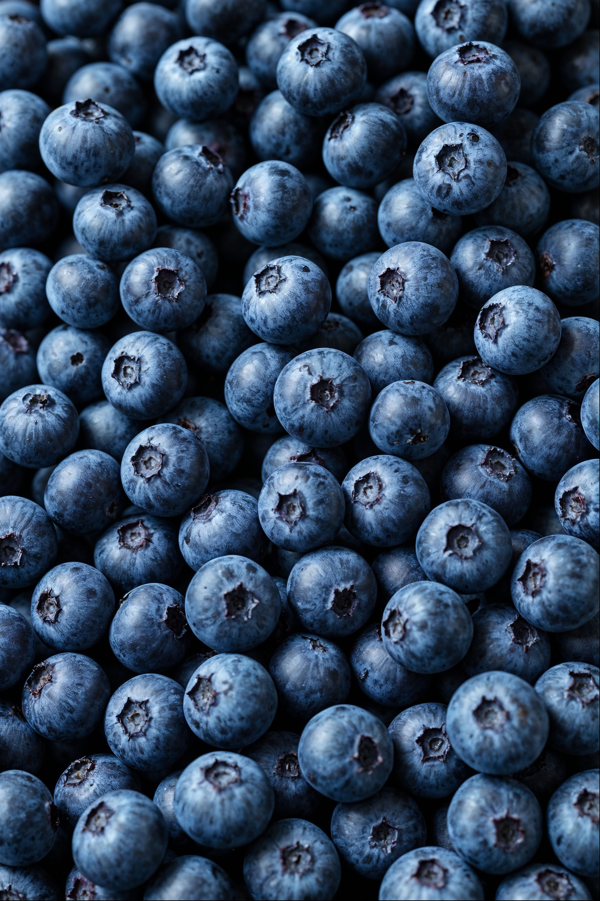

Tu guía de Lactoberry. Aquí encuentras productos diseñados para energía, bienestar y sabor en cada momento del día.
Chocho, arándanos y superalimentos andinos que suman nutrición extra.
Opciones para deportistas, niños, adultos y personas con intoleraancia.
Información de ingredientes y beneficios para que elijas con confianza.
Leche semidescremada enriquecida con extracto de chocho y arándano. Ideal para consumo diario, aporta proteína y antioxidantes.
Leche, extracto de chocho, jugo concentrado de arándano, vitaminas (A, D) y minerales.
Yogurt alto en proteína con probióticos y trozos reales de arándano. Especial para deportistas y desayuno.
Fórmula sin azúcares añadidos y deslactosada, manteniendo el sabor natural del arándano.
Personas con intolerancia a la lactosa y quienes buscan reducir su ingesta de azúcares.
Sin azúcares añadidos — Deslactosado
Batido suave con calcio natural, fibra y sabor dulce para apoyar el crecimiento de los niños.
Si tienes dudas, contáctanos y te ayudaremos a seleccionar la mejor opción.
Empaque recyclable y envíos rápidos para que tu pedido llegue fresco.
Nos aliamos con productores de la región para construir una cadena de valor más justa.
Mira nuestros vasos de leche y el toque de arándanos que hace especial cada producto Lactoberry.

Presentación del producto en vaso, resaltando su cremosidad y frescura.

Ingredientes clave que aportan sabor y antioxidantes reales al producto.
Nuestros clientes destacan la calidad, el sabor natural y la energía que ofrecen los productos Lactoberry.